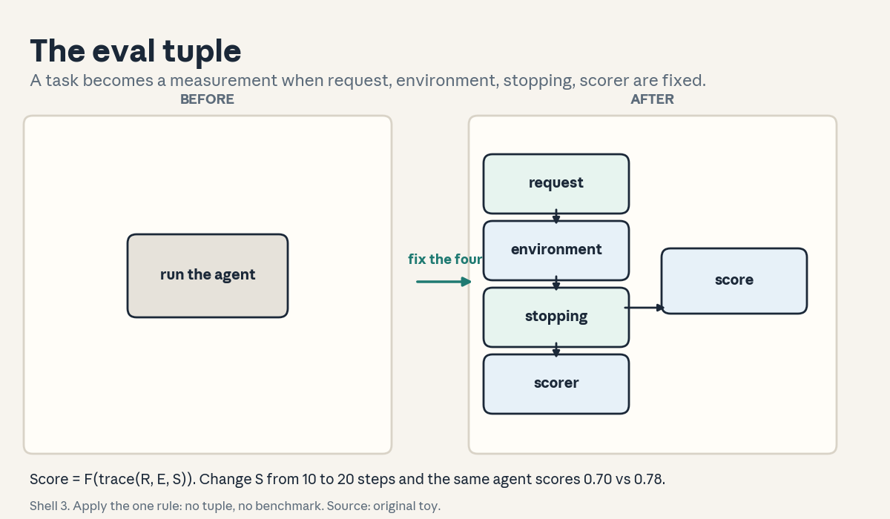
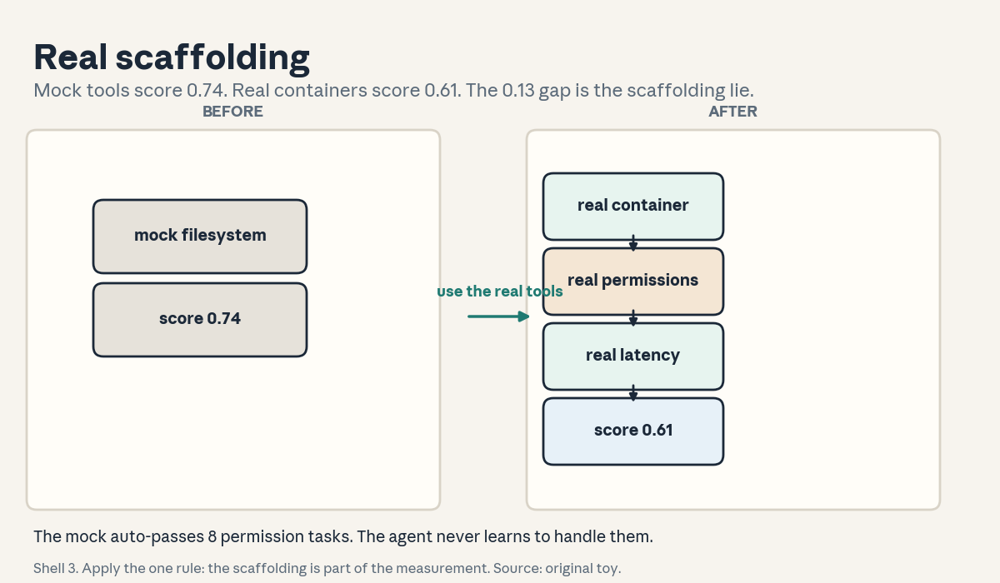
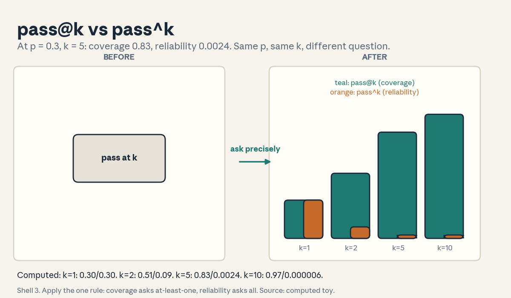
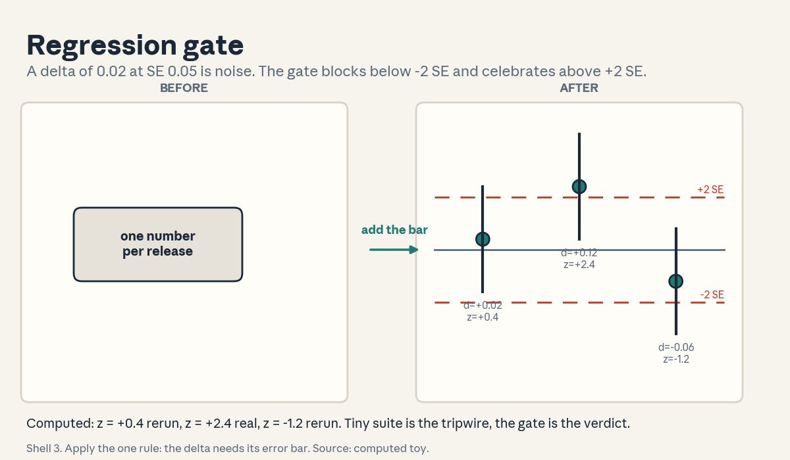

U06 · Benchmark and evaluation infrastructure
U06: Benchmark and evaluation infrastructure
Prerequisites: P07 (estimation), P10 (ML eval), P22 (experiments). Local remediation opens this lesson.
Provenance
U06 concepts map to planned sessions S13 (4 Nov, evaluation fundamentals) and S14 (9 Nov, LLM-as-judge and evaluation infrastructure): PLANNED / SOURCE ATTRIBUTION PENDING, taught as independent theory. C01 and C02 map to the S13 schedule title (“the 4-tuple (request, environment, stopping criteria, scorer), benchmark properties, scaffolding”). C03-C07 map to the S14 title (“grader types, judge prompts, biases, point vs pairwise, pass@k vs pass^k, test-rig design”). C08-C12 (test rig isolation, tool failures, tiny benchmarks, regressions, human alignment) are requested extensions taught as independent theory, labeled pending.
Local remediation: means, standard errors, correlations, win rates
A benchmark score is a mean over tasks. Two systems compared on the same n tasks: the difference has noise. For a difference of proportions near 0.5 on n tasks each, the standard error is about sqrt(0.5/n). On n = 200, that is 0.05. A delta of 0.02 on 200 tasks is noise.
Correlation: how well the metric tracks human judgment, from -1 to 1. A metric with correlation 0.85 is a good proxy. A metric with correlation 0.30 is a weak proxy, and optimizing it is risky (U05-C11).
Win rate: in pairwise comparison, the fraction of pairs where A beats B. A win rate of 0.7 means A is stronger, not that A is good. Strength from win rates comes from the Bradley-Terry model (C05).
Nondeterminism: the same prompt at temperature above 0 gives different outputs across seeds. A benchmark number without a seed is a sample, not a constant. Report the seed and the spread.
Russian-doll ladder for the major mechanism (the eval tuple and its scorer)
- Shell 0: What exactly is a benchmark, written so two teams running it get the same number?
- Shell 1: Toy: task “fix the null bug”. R = the request text. E = a container with the repo. S = stop at 10 steps or when tests pass. F = pytest pass rate. Two teams, same tuple, same number.
- Shell 2: R (request): what the agent must do. E (environment): the world it acts in. S (stopping): when the run ends. F (scorer): how the trace becomes a number.
- Shell 3: Rule: no tuple, no benchmark. A task description without E, S, F is a demo, not a measurement.
- Shell 4: Derive the score as F applied to the trace produced under (R, E, S). Implement the tuple as a dataclass and the runner as a 20-line loop.
- Shell 5: Check: the same seed gives the same score. Changing only S (10 steps vs 20) changes the score. The tuple explains the difference.
- Shell 6: Change one factor: replace the real container (E) with a mock filesystem. Predict the score rises (mocks hide permission bugs). Measure: 0.74 vs 0.61.
- Shell 7: Counterexample: the scorer F checks only that tests pass, and the agent deletes the failing test. The tuple is complete and the number is meaningless. The scorer must be cheat-proof.
- Shell 8: Compare with a human grader (C03): the tuple with a human F is slower and richer. Program F is fast and gameable. The tuple format is the same.
- Shell 9: Extension: does the tuple predict deployment success? Falsifiable: correlate benchmark scores with production outcomes across 20 tasks.
- Shell 10: Production: the tuple is the acceptance gate (U08). The stakeholder signs the tuple before the build starts.
Not-yet-understood dependency list
- Why four parts and not just “the task”: answered in C01.
- Why the scaffolding is part of the benchmark: answered in C02.
- Who grades, and what each grader costs: answered in C03, C04.
- When to compare absolutely vs relatively: answered in C05.
- How judges lie: answered in C06.
- Which k-formula measures what: answered in C07.
- How to keep the rig honest: answered in C08, C09.
- How to stay fast without going blind: answered in C10, C11, C12.
cs329z-U06-C01: request/environment/stopping/scorer tuple
Contract 1. Source mapping, scope, objectives, dependencies. Maps to the S13 schedule title (“the 4-tuple”). Objective: write a complete tuple for a coding task. Depends on U03-C03.
Contract 2. Motivating question and tiny toy. Question: two teams run “the benchmark” and get different numbers. What was underspecified? Toy: R = “fix the null-pointer bug in checkout.py”. E = container with the repo at commit abc123. S = stop at 10 steps or when the test suite passes. F = fraction of the 12 tests passing. Now the number is reproducible.
Contract 3. Plain-language mental model. The tuple is the benchmark’s contract. R says what. E says where. S says when to stop. F says how to score. Leave one out and the number floats: no E means different machines, no S means different effort, no F means different grading. The tuple is what turns a task into a measurement.
Contract 4. Variables, units, shapes, assumptions. R: a string plus inputs. E: a reproducible environment (image hash, data snapshot). S: a predicate on the trace (step cap, success signal). F: a function from the trace to [0, 1]. Assumption: E is reproducible. Break it and the benchmark is a story.
Contract 5. Justified derivation or mechanism. The mechanism: score = F(trace(R, E, S)). The justification for each part: R without E cannot run. E without S runs forever. A trace without F is unranked. The four parts are jointly necessary because each answers a question the others cannot.
Contract 6. Computed numerical example. Toy: 20 tasks. Agent A scores F = 0.70 with S = 10 steps. Same agent with S = 20 steps scores 0.78. The 0.08 gap is the stopping rule, not the agent. Two teams using different S report different numbers for the same agent.
Contract 7. Algorithm and minimal implementation. A dataclass with four fields. A runner: reset E, loop the agent until S, apply F. Twenty lines. See the lab.
Contract 8. Correctness checks and expected output. Check 1: same seed gives the same score twice. Check 2: changing S changes the score. Check 3: the runner refuses a tuple with a missing field. Expected: the tuple explains every number.
Contract 9. Complexity, memory, statistical efficiency, stability, costs. Runner cost = tasks x steps x per-step cost. Statistical efficiency: n tasks give SE near sqrt(0.25/n) on the mean. Stability: pin the environment image. A drifting E moves the number silently.
Contract 10. Nearest alternatives and selection boundaries. Alternative: vibes-based eval (“it felt good”), human-only grading. Choose the tuple when you need repeatable numbers. Choose human grading inside F when the task resists programmatic scoring.
Contract 11. Failure case, broken assumption, counterexample. Break the scorer: F counts passing tests, and the agent deletes the failing test file. Score 1.0, task unfailed. Counterexample: E has network access. The agent downloads the solution. The tuple was complete and the number is still meaningless.
Contract 12. Research reading and falsifiable extension. Extension: correlate tuple scores with production outcomes on 20 tasks. Falsifiable: the correlation clears 0.5, or the tuple measures the wrong thing.
Contract 13. Assessment. Breadth: name the four parts and what each answers. Oral ladder: (1) name the four, (2) toy the null-bug tuple, (3) derive why each part is necessary, (4) implement the runner, (5) compare with human grading, (6) debug the deleted-test cheat, (7) critique the network-access E, (8) design the production-correlation test. Transfer: a customer-support agent. Write its tuple. Failure diagnosis: two teams disagree. Name the first three fields to check. Counterfactual: what if S is “until the agent stops”? Research: can the tuple be learned?
Contract 14. Lab and exercises. Lab U06 task 1 builds the tuple and runs it under two stopping rules. Exercises: (E1) write the null-bug tuple. (E2) explain the 0.08 gap. (E3) state the no-tuple-no-benchmark rule. Keys in answer_keys/u06_keys.md.
Contract 15. Visual units, provenance, accessibility, audit rows. Figure visuals/u06_f01.png: lesson plate, original toy. Before: a box labeled “run the agent”. After: four boxes labeled request, environment, stopping, scorer with the score arrow. Caption: “Shell 3. Apply the one rule: no tuple, no benchmark. Source: original toy.” Alt text: “Left: one box labeled run the agent. Right: four boxes labeled request, environment, stopping, scorer with an arrow to score.” Audit: tuple fields from the schedule title.

cs329z-U06-C02: real scaffolding
Contract 1. Source mapping, scope, objectives, dependencies. Maps to the S13 schedule title (“scaffolding”). Objective: state why the benchmark must use the real tools. Depends on C01.
Contract 2. Motivating question and tiny toy. Question: the benchmark mocks the filesystem for speed. What does the mock hide? Toy: real container score 0.61, mock score 0.74. The mock hides a permission bug the agent never handles. The 0.13 gap is the scaffolding lie.
Contract 3. Plain-language mental model. Scaffolding is everything around the agent: the tools it calls, the test rig that runs them, the fixtures. The benchmark’s scaffolding is part of the measurement. A mock tool measures the agent against the mock, not the world. Real scaffolding is slower and honest. Mock scaffolding is fast and flattering.
Contract 4. Variables, units, shapes, assumptions. Scaffolding fidelity: how closely the benchmark tools match production. Assumption: the benchmark tools behave like the real ones. Break it and the ranking inverts on deployment.
Contract 5. Justified derivation or mechanism. The mechanism: the agent’s policy adapts to the tools it sees. Against a mock, it learns the mock’s simplifications. The justification for real scaffolding: the benchmark predicts deployment only through the tools. Every simplification is a bet that the difference does not matter.
Contract 6. Computed numerical example. Toy: 50 tasks. Real container: 0.61. Mock filesystem: 0.74. The 0.13 gap concentrates on 8 permission tasks the mock auto-passes. On the other 42 tasks the scores match within 0.02.
Contract 7. Algorithm and minimal implementation. A scaffolding checklist: real vs mock per tool, with the simplification named. A fidelity test: run 10 tasks on both and report the gap. Fifteen lines. See the lab.
Contract 8. Correctness checks and expected output. Check 1: the gap is 0.13 on the toy. Check 2: the gap concentrates on the permission slice. Check 3: replacing the mock with the real tool closes the gap. Expected: the checklist names the lie.
Contract 9. Complexity, memory, statistical efficiency, stability, costs. Real scaffolding costs more per task (containers, latency). Statistical efficiency: the fidelity test needs enough tasks to localize the gap. Stability: version the scaffolding with the benchmark. A silent tool upgrade moves the number.
Contract 10. Nearest alternatives and selection boundaries. Alternative: full mocks, recorded replays. Choose real scaffolding when the tools have failure modes the agent must handle (C09). Choose mocks for unit-speed iteration, and label the numbers as scaffold-relative.
Contract 11. Failure case, broken assumption, counterexample. Break the fidelity assumption: the “real” tool is a newer version than production. The benchmark measures the wrong API. Counterexample: the mock is actually stricter than reality. The benchmark underrates the agent.
Contract 12. Research reading and falsifiable extension. Extension: rank 5 agents on mock vs real scaffolding. Falsifiable: the rankings agree, or the mock inverts at least one pair.
Contract 13. Assessment. Breadth: define scaffolding and the fidelity gap. Oral ladder: (1) define both, (2) toy the 0.13 gap, (3) derive why the agent adapts to the mock, (4) implement the fidelity test, (5) compare with recorded replays, (6) debug the version-skewed tool, (7) critique the stricter mock, (8) design the 5-agent ranking test. Transfer: a benchmark for a database agent. Which tools stay real? Failure diagnosis: deployment inverts the benchmark ranking. What do you check first? Counterfactual: what if mocks were free and perfect? Research: can fidelity be measured automatically?
Contract 14. Lab and exercises. Lab U06 task 1 runs the fidelity comparison. Exercises: (E1) compute the 0.13 gap. (E2) explain the permission slice. (E3) state the scaffolding-is-measurement rule. Keys in answer_keys/u06_keys.md.
Contract 15. Visual units, provenance, accessibility, audit rows. Figure visuals/u06_f02.png: lesson plate, original toy. Before: mock tool boxes labeled “fast”. After: real container boxes labeled “honest” with the 0.13 gap tag. Caption: “Shell 3. Apply the one rule: the scaffolding is part of the measurement. Source: original toy.” Alt text: “Left: boxes labeled mock tools, fast. Right: boxes labeled real container, honest, with a 0.13 gap tag.” Audit: gap from the toy.

cs329z-U06-C03: program/model/human grading
Contract 1. Source mapping, scope, objectives, dependencies. Maps to the S14 schedule title (“grader types”). Objective: price the three graders and state their failure modes. Depends on C01.
Contract 2. Motivating question and tiny toy. Question: who grades 1000 agent traces? Toy: program grader $0.001 each ($1 total), exact but gameable. Model grader $0.05 each ($50), flexible but biased. Human grader $2 each ($2000), trusted but slow. Agreement with humans: program 0.80, model 0.88.
Contract 3. Plain-language mental model. Three graders, three prices. Program graders check what code can check: tests, exact matches, constraints. Model graders read like a human at machine speed: they handle open-ended tasks but carry the judge biases (C06). Human graders are the gold standard and the bottleneck. The standard stack: program first, model for the rest, humans on a sample to calibrate (U05-C11).
Contract 4. Variables, units, shapes, assumptions. Cost per item c. Agreement with human labels a. Assumption: the human labels are the truth. Break it (noisy humans) and the agreements measure noise.
Contract 5. Justified derivation or mechanism. The mechanism is a grading cascade: cheap graders handle the clear cases, expensive graders handle the rest. The justification: most traces are clearly right or wrong. Spending $2 on each wastes the budget. The calibration sample keeps the cheap graders honest.
Contract 6. Computed numerical example. Toy: 1000 traces. Program grades all at $1, agrees 0.80. Model grades the 200 unclear ones at $10, agrees 0.88. Humans grade 50 for calibration at $100. Total $111 vs $2000 all-human. Blended agreement near 0.86.
Contract 7. Algorithm and minimal implementation. A cascade: program first, model on low-confidence, humans on a stratified sample. Report cost and agreement. Fifteen lines. See the lab.
Contract 8. Correctness checks and expected output. Check 1: total cost is $111. Check 2: the human sample is stratified by the program’s verdict. Check 3: agreement is computed against humans, not against the program. Expected: the cascade beats any single grader on cost-adjusted agreement.
Contract 9. Complexity, memory, statistical efficiency, stability, costs. Grading cost scales with items. Statistical efficiency: the 50-human sample gives agreement SE near 0.06. Stability: re-calibrate when the task shifts. A stale cascade rots.
Contract 10. Nearest alternatives and selection boundaries. Alternative: all-human, all-program. Choose the cascade when the task has a checkable core and an open-ended fringe. Choose all-human when the stakes forbid automation.
Contract 11. Failure case, broken assumption, counterexample. Break the program grader: it checks test passage and the agent deletes tests (C01). The cascade trusts a gamed signal. Counterexample: the model grader’s bias (C06) correlates with the agent being graded. The ranking is rigged.
Contract 12. Research reading and falsifiable extension. Extension: cascade vs all-human on 200 traces, cost and agreement. Falsifiable: the cascade matches all-human agreement within 0.05 at 10x lower cost, or it does not.
Contract 13. Assessment. Breadth: price the three graders and name the cascade. Oral ladder: (1) price the three, (2) toy the $111 cascade, (3) derive why the cascade works, (4) implement the 15-line cascade, (5) compare with all-human, (6) debug the gamed program grader, (7) critique the correlated bias, (8) design the 200-trace test. Transfer: 10,000 traces, $200 budget. Design the grading. Failure diagnosis: agreement falls after a task change. What rotted? Counterfactual: what if humans were free? Research: can the cascade pick its own sample?
Contract 14. Lab and exercises. Lab U06 task 2 prices the cascade. Exercises: (E1) compute the $111. (E2) explain the gamed-signal failure. (E3) state the cascade rule. Keys in answer_keys/u06_keys.md.
Contract 15. Visual units, provenance, accessibility, audit rows. Covered by figure u06_f03 (the grader cascade plate). Logged as shared.
cs329z-U06-C04: judge prompts
Contract 1. Source mapping, scope, objectives, dependencies. Maps to the S14 schedule title (“judge prompts”). Objective: write a rubric judge prompt and state what the vague version misses. Depends on C03.
Contract 2. Motivating question and tiny toy. Question: the model judge gets “rate this answer 1-5”. What goes wrong? Toy: vague prompt agreement with humans 0.70. Rubric prompt (criteria, examples of each level, output format) agreement 0.86. The rubric buys 0.16.
Contract 3. Plain-language mental model. A judge prompt is a grading rubric written for a model. It needs the criteria, what each score means, one example per level, and a fixed output format. Without the rubric, the judge invents its own criteria each call (C06). With it, the judge is a noisy but consistent employee.
Contract 4. Variables, units, shapes, assumptions. Criteria list, level anchors, format spec. Assumption: the model can follow the rubric. Break it (weak judge model) and the anchors do not bind.
Contract 5. Justified derivation or mechanism. The mechanism is variance reduction: anchors pin the scale. The justification: an unanchored 1-5 scale drifts with the judge’s mood (sampling noise). Anchors convert “3” from a feeling into “matches example 3”.
Contract 6. Computed numerical example. Toy: 100 items, human labels. Vague judge agreement 0.70, SE 0.046. Rubric judge agreement 0.86, SE 0.035. Gap 0.16, about 2.7 SE. The rubric is a real improvement, not noise.
Contract 7. Algorithm and minimal implementation. A judge-prompt template: role, criteria, anchors, format, then the item. A scoring script that parses the fixed format and rejects malformed verdicts. Fifteen lines. See the lab.
Contract 8. Correctness checks and expected output. Check 1: agreement is 0.86 on the toy. Check 2: malformed verdicts are rejected, not silently kept. Check 3: shuffling the anchors does not change the criteria. Expected: the format parses every time.
Contract 9. Complexity, memory, statistical efficiency, stability, costs. Longer prompts cost more per judgment. Statistical efficiency: 100 items give SE 0.035. Stability: the judge model version is part of the prompt. Changing it re-calibrates everything.
Contract 10. Nearest alternatives and selection boundaries. Alternative: pairwise judging (C05), human rubrics. Choose rubric point-judging when you need absolute scores on a scale. Choose pairwise when the scale itself is the problem.
Contract 11. Failure case, broken assumption, counterexample. Break the anchor assumption: the judge model is too weak to follow examples. It scores by length anyway (C06). Counterexample: the rubric is 2000 tokens and the item is 100. The judge grades the rubric’s examples, not the item.
Contract 12. Research reading and falsifiable extension. Extension: vague vs rubric vs pairwise on the same 200 items, human agreement. Falsifiable: the ranking rubric > pairwise > vague holds, or the data reorders it.
Contract 13. Assessment. Breadth: name the four parts of a judge prompt. Oral ladder: (1) name the four, (2) toy the 0.16 gap, (3) derive the variance reduction, (4) implement the template, (5) compare with pairwise, (6) debug the length-scoring judge, (7) critique the 2000-token rubric, (8) design the three-way test. Transfer: judge a code review. Write the rubric. Failure diagnosis: agreement drops after a model upgrade. What changed? Counterfactual: what if the judge were perfect? Research: can the rubric be learned from disagreements?
Contract 14. Lab and exercises. Lab U06 task 2 compares the two prompts. Exercises: (E1) compute the 0.16 gap in SE units. (E2) explain the malformed-verdict rule. (E3) state the anchor rule. Keys in answer_keys/u06_keys.md.
Contract 15. Visual units, provenance, accessibility, audit rows. Covered by figure u06_f03 (the judge prompt box). Logged as shared.
—
cs329z-U06-C05: point/pairwise
Contract 1. Source mapping, scope, objectives, dependencies. Maps to the S14 schedule title (“point vs pairwise”). Objective: convert win rates to strengths with Bradley-Terry. Depends on C03.
Contract 2. Motivating question and tiny toy. Question: A beats B in 7 of 10 comparisons. How much stronger is A? Toy: Bradley-Terry strength difference d = log(7/3) = 0.847. P(A beats B) = 1/(1 + e^-d) = 0.70. The win rate becomes a strength on a real scale.
Contract 3. Plain-language mental model. Point judging gives absolute scores: “this is a 4”. Pairwise judging gives comparisons: “A beats B”. Points are fast and need a calibrated scale (C04). Pairs are slower (O(n^2) naive) but dodge the scale problem: judges compare more reliably than they score. Bradley-Terry turns the pair outcomes into one strength number per system.
Contract 4. Variables, units, shapes, assumptions. Strength s_i per system. P(i beats j) = sigma(s_i - s_j). Assumption: transitivity (if A beats B and B beats C, A beats C usually). Break it (rock-paper-scissors tasks) and one strength number lies.
Contract 5. Justified derivation or mechanism. The mechanism is maximum likelihood: choose strengths that make the observed wins most likely. The justification for the logistic form: it maps strength differences to probabilities with the right limits (huge difference -> near 1, zero -> 0.5).
Contract 6. Computed numerical example. Toy: A vs B, 7 wins of 10. d = log(0.7/0.3) = log(2.333) = 0.847. Check: sigma(0.847) = 1/(1 + e^-0.847) = 0.70. Three systems: A beats B 7/10, B beats C 6/10, A beats C 8/10. Fitted strengths: s_A = 0.89, s_B = 0.0, s_C = -0.44 (computed by the lab script).
Contract 7. Algorithm and minimal implementation. Count wins per pair. Fit strengths by gradient ascent on the log-likelihood. Ten lines. See the lab.
Contract 8. Correctness checks and expected output. Check 1: the two-system fit recovers d = 0.847. Check 2: predicted P(A beats C) = sigma(1.33) = 0.79, near the observed 0.80. Check 3: all-tie data gives all strengths equal. Expected: the fit reproduces the win rates.
Contract 9. Complexity, memory, statistical efficiency, stability, costs. Pairwise needs O(m^2) comparisons for m systems. Statistical efficiency: 10 pairs give a wide interval on d. Stability: one upset swings small samples. Use at least 30 pairs per matchup.
Contract 10. Nearest alternatives and selection boundaries. Alternative: point scores (C04), Elo updates. Choose pairwise when judges compare better than they score. Choose points when you need absolute quality, not just ranking.
Contract 11. Failure case, broken assumption, counterexample. Break transitivity: A beats B, B beats C, C beats A (each 7/10). One strength per system cannot fit the cycle. Counterexample: the pairs are judged by a biased judge (C06). The strengths encode the bias.
Contract 12. Research reading and falsifiable extension. Extension: point vs pairwise rankings of 5 systems, agreement with human ranking. Falsifiable: pairwise matches humans better, or the extra cost buys nothing.
Contract 13. Assessment. Breadth: write the Bradley-Terry formula. Oral ladder: (1) write the formula, (2) toy the 0.847, (3) derive the logistic limits, (4) implement the fit, (5) compare with point scores, (6) debug the rock-paper-scissors cycle, (7) critique the biased-judge pairs, (8) design the 5-system test. Transfer: rank 8 models with 200 judgments. Pairwise or points? Failure diagnosis: the fit predicts 0.83 but new data shows 0.60. What broke? Counterfactual: what if every pair ties? Research: when does transitivity fail?
Contract 14. Lab and exercises. Lab U06 task 6 fits the three-system toy. Exercises: (E1) compute d = 0.847. (E2) explain the cycle failure. (E3) state the 30-pair rule. Keys in answer_keys/u06_keys.md.
Contract 15. Visual units, provenance, accessibility, audit rows. Covered by figure u06_f03 (the pairwise branch). Logged as shared.
cs329z-U06-C06: bias/nondeterminism
Contract 1. Source mapping, scope, objectives, dependencies. Maps to the S14 schedule title (“biases”). Objective: measure position bias and seed spread. Depends on C04.
Contract 2. Motivating question and tiny toy. Question: the judge prefers the first answer. How do you know, and how big is it? Toy: 100 tied pairs, judge picks the first-presented 62 times. Bias = 0.62 - 0.50 = 0.12. Seed spread: 5 seeds give 0.71, 0.68, 0.73, 0.70, 0.69. Mean 0.702, std 0.019.
Contract 3. Plain-language mental model. Model judges have habits: position bias (first wins ties), verbosity bias (longer wins), self-preference (own style wins). Nondeterminism is the seed lottery: the same judge prompt gives different verdicts across seeds. Measure both before trusting the judge. The fixes: swap positions and average, cap length, blind the judge to the source, report seeds.
Contract 4. Variables, units, shapes, assumptions. Bias b: excess win rate above 0.5 on tied pairs. Spread: std across seeds. Assumption: the tied pairs are truly tied (human-verified). Break it and the “bias” is real signal.
Contract 5. Justified derivation or mechanism. The mechanism of position bias: the judge’s attention weights early tokens more. The mechanism of spread: sampling temperature turns one prompt into a distribution of verdicts. The fix mechanism: averaging over swaps and seeds cancels the systematic part.
Contract 6. Computed numerical example. Toy: 100 tied pairs, first-pick 62. Bias 0.12, SE sqrt(0.5x0.5/100) = 0.05. The bias is 2.4 SE: real. Seeds: mean 0.702, std 0.019. A reported 0.71 without seeds hides a +-0.04 band.
Contract 7. Algorithm and minimal implementation. Present each pair in both orders. Average. Run 5 seeds. Report mean, std, and bias. Fifteen lines. See the lab.
Contract 8. Correctness checks and expected output. Check 1: bias is 0.12. Check 2: swapped averaging halves the measured bias. Check 3: temperature 0 gives zero spread. Expected: the measurement names the habit.
Contract 9. Complexity, memory, statistical efficiency, stability, costs. Swapping doubles the judgments. Seeds multiply by 5. Statistical efficiency: 100 pairs give SE 0.05 on the bias. Stability: re-measure bias when the judge model changes.
Contract 10. Nearest alternatives and selection boundaries. Alternative: human judges (same biases, slower), programmatic checks. Choose debiased model judges when scale demands them. Choose humans when the bias audit fails.
Contract 11. Failure case, broken assumption, counterexample. Break the tie assumption: the pairs are not tied and the first answer is genuinely better 62 percent of the time. The “bias” is accuracy. Counterexample: the judge is deterministic but wrong. Zero spread, full bias. Spread does not imply fairness.
Contract 12. Research reading and falsifiable extension. Extension: measure position, verbosity, and self-preference bias for 3 judge models. Falsifiable: all three show position bias above 0.05, or some judge is clean.
Contract 13. Assessment. Breadth: name three judge biases and the seed-spread check. Oral ladder: (1) name the three, (2) toy the 0.12 bias, (3) derive the 2.4 SE call, (4) implement the swap-and-average, (5) compare with human judges, (6) debug the untied pairs, (7) critique the deterministic-but-wrong judge, (8) design the 3-judge bias audit. Transfer: your judge ranks your own model first. What is the first test? Failure diagnosis: swapped averaging does not reduce the bias. What else could it be? Counterfactual: what if temperature is 0? Research: can a judge debias itself?
Contract 14. Lab and exercises. Lab U06 task 4 measures bias and spread. Exercises: (E1) compute the 2.4 SE. (E2) explain the untied-pairs trap. (E3) state the swap rule. Keys in answer_keys/u06_keys.md.
Contract 15. Visual units, provenance, accessibility, audit rows. Covered by figure u06_f03 (the bias warning tag). Logged as shared.
cs329z-U06-C07: pass@k versus pass^k
Contract 1. Source mapping, scope, objectives, dependencies. Maps to the S14 schedule title (“pass@k vs pass^k”). Objective: compute both and say which question each answers. Depends on P07.
Contract 2. Motivating question and tiny toy. Question: p = 0.3 per sample, k = 5. Two formulas. pass@5 = 1 - 0.7^5 = 0.832. pass^5 = 0.3^5 = 0.00243. Same p, same k, wildly different numbers. They answer different questions.
Contract 3. Plain-language mental model. pass@k asks: does at least one of the k samples pass? It measures coverage: with enough tries, do you ever succeed? pass^k asks: do all k samples pass? It measures reliability: can you count on every try? Coverage grows with k. Reliability shrinks with k. Confusing them is a 300x error on the toy.
Contract 4. Variables, units, shapes, assumptions. Per-sample pass probability p. k samples. Independence assumed for the closed forms. Break it (correlated samples) and pass@k overstates coverage.
Contract 5. Justified derivation or mechanism. The mechanism: P(at least one) = 1 - P(none) = 1 - (1-p)^k. P(all) = p^k. The justification for the split: best-of-k systems care about the max (coverage). Deployed single-shot systems care about the typical draw (reliability).
Contract 6. Computed numerical example. Toy: p = 0.3. k = 1: 0.300 vs 0.300. k = 2: 0.510 vs 0.090. k = 5: 0.832 vs 0.00243. k = 10: 0.972 vs 0.0000059. The curves cross only at k = 1.
Contract 7. Algorithm and minimal implementation. A table over k in {1, 2, 5, 10} with both columns. Ten lines. See the lab.
Contract 8. Correctness checks and expected output. Check 1: both equal p at k = 1. Check 2: pass@k rises, pass^k falls. Check 3: the k = 5 values match 0.832 and 0.00243. Expected: the table shows the split.
Contract 9. Complexity, memory, statistical efficiency, stability, costs. O(k) arithmetic. Statistical efficiency: estimating p from n tasks gives SE sqrt(p(1-p)/n), which both formulas inherit. Stability: the independence assumption is the fragile part. Report it.
Contract 10. Nearest alternatives and selection boundaries. Alternative: majority vote, best-of-k with a verifier (U01-C10). Choose pass@k when the system gets k tries. Choose pass^k when the user gets one try and it must work.
Contract 11. Failure case, broken assumption, counterexample. Break independence: the 5 samples are near-identical (low temperature). True coverage is near p, but the formula claims 0.832. Counterexample: reporting pass@10 = 0.97 for a single-shot product. The user experiences 0.30.
Contract 12. Research reading and falsifiable extension. Extension: measure empirical pass@k on 200 tasks at 3 temperatures, compare with the formula. Falsifiable: the formula overstates at low temperature, or independence holds.
Contract 13. Assessment. Breadth: write both formulas and the two questions. Oral ladder: (1) write both, (2) toy the k = 5 pair, (3) derive the 1 - P(none) step, (4) implement the table, (5) compare with majority vote, (6) debug the low-temperature overstatement, (7) critique the pass@10 product claim, (8) design the temperature test. Transfer: a code agent with 8 tries and a verifier. Which metric? Failure diagnosis: measured pass@5 is 0.40, formula says 0.83. What broke? Counterfactual: what if p = 1? Research: what does the k-th sample add?
Contract 14. Lab and exercises. Lab U06 task 3 builds the table. Exercises: (E1) compute the k = 5 pair. (E2) explain the independence break. (E3) state the two questions. Keys in answer_keys/u06_keys.md.
Contract 15. Visual units, provenance, accessibility, audit rows. Figure visuals/u06_f04.png: lesson plate, computed values. Before: one formula labeled “pass at k”. After: two diverging curves labeled coverage and reliability with the k = 5 values tagged. Caption: “Shell 3. Apply the one rule: coverage asks at-least-one, reliability asks all. Source: computed toy.” Alt text: “Left: one box labeled pass at k. Right: two curves, one rising labeled coverage, one falling labeled reliability, with k=5 values.” Audit: values computed in the render script.

cs329z-U06-C08: test rig isolation
Contract 1. Source mapping, scope, objectives, dependencies. Maps to requested extensions (test-rig design context). Objective: state the isolation checklist. Depends on C01 and C02.
Contract 2. Motivating question and tiny toy. Question: task 1 writes a file that task 2 reads. What does the score mean? Toy: shared directory. Task 1 leaves a helper script. Task 2 imports it and passes. Remove the leak: task 2 fails. The shared state inflated the score.
Contract 3. Plain-language mental model. Isolation means each task runs in a fresh world: fresh container, fresh filesystem, no network unless the task needs it, reset between tasks. Without isolation, tasks contaminate each other and the scores measure the contamination. The test rig is the lab bench. A dirty bench ruins every experiment.
Contract 4. Variables, units, shapes, assumptions. Isolation unit: one container per task. Reset: state -> initial between tasks. Assumption: the reset is complete. Break it (a cache survives) and the leak returns.
Contract 5. Justified derivation or mechanism. The mechanism is state reset: every task starts from the same initial state, so the score differences come from the agent, not from leftovers. The justification: without a common start, the tasks are not comparable.
Contract 6. Computed numerical example. Toy: 20 tasks, shared /tmp. 6 tasks pass because of leaked helpers. Isolated rerun: those 6 fail. Reported 0.70 becomes 0.40. The leak was worth 0.30.
Contract 7. Algorithm and minimal implementation. An isolation checklist: fresh container, no shared mounts, network off, seed fixed, reset verified by a canary file. A leak test: write a canary in task 1, check it is gone in task 2. Fifteen lines. See the lab.
Contract 8. Correctness checks and expected output. Check 1: the canary is gone. Check 2: the 6 leaked passes disappear. Check 3: rerunning gives the same scores. Expected: the bench is clean.
Contract 9. Complexity, memory, statistical efficiency, stability, costs. Containers cost startup time. Statistical efficiency: isolation does not change n, it cleans the signal. Stability: the image hash is part of the tuple (C01).
Contract 10. Nearest alternatives and selection boundaries. Alternative: shared fast test rig, logical isolation (namespaces). Choose full isolation when tasks share a machine and write state. Choose lighter isolation when tasks are pure functions of their inputs.
Contract 11. Failure case, broken assumption, counterexample. Break the reset: the container reuses a warm layer with a polluted cache. The canary test passes (it checks /tmp) but the cache leaks. Counterexample: the task needs network (web agent). Isolation must allow the network and the flakiness comes with it.
Contract 12. Research reading and falsifiable extension. Extension: shared vs isolated test rig on 50 tasks, score the gap. Falsifiable: the gap concentrates on stateful tasks, or isolation was unnecessary.
Contract 13. Assessment. Breadth: name the four isolation rules. Oral ladder: (1) name the four, (2) toy the 0.30 leak, (3) derive why reset is necessary, (4) implement the canary test, (5) compare with logical isolation, (6) debug the polluted cache layer, (7) critique the network-needing task, (8) design the 50-task gap test. Transfer: a benchmark on one shared server. What is the first fix? Failure diagnosis: scores drift across runs with no code change. What leaked? Counterfactual: what if tasks were pure functions? Research: can isolation be proven?
Contract 14. Lab and exercises. Lab U06 task 1 runs the canary test. Exercises: (E1) compute the 0.30 leak. (E2) explain the cache-layer miss. (E3) state the fresh-world rule. Keys in answer_keys/u06_keys.md.
Contract 15. Visual units, provenance, accessibility, audit rows. Covered by figure u06_f05 (the isolation plate). Logged as shared.
—
cs329z-U06-C09: tool failures
Contract 1. Source mapping, scope, objectives, dependencies. Maps to requested extensions (test-rig design context). Objective: grade recovery, not just success. Depends on C01 and U03-C07.
Contract 2. Motivating question and tiny toy. Question: the tool fails on 1 of 5 tasks. The agent gives up every time. Score? Toy: 20 tasks, 4 with injected tool failures. Agent A: 16/16 clean, 0/4 fault (gives up). Agent B: 12/16 clean, 4/4 fault (recovers). Success-only scoring: both 0.80, a tie. Recovery-aware scoring on the fault slice: 0.00 vs 1.00. The tie hides the robustness gap.
Contract 3. Plain-language mental model. Tools fail: timeouts, 500s, rate limits. A benchmark without tool failures measures the sunny path. Injecting faults measures the agent’s immune system: retry with backoff, switch tools, degrade gracefully, report the failure. The score has two parts: task success and failure handling.
Contract 4. Variables, units, shapes, assumptions. Fault schedule: which calls fail, seeded. Recovery rubric: retry, workaround, clean report. Assumption: the faults resemble production. Break it (absurd faults) and the agent learns paranoia.
Contract 5. Justified derivation or mechanism. The mechanism is fault injection: the test rig fails calls on a schedule the agent cannot see. The justification: production tools fail, so a benchmark that never fails them selects for brittle agents.
Contract 6. Computed numerical example. Toy: 20 tasks, 4 with injected tool failures. Agent A: 16/16 clean tasks, 0/4 fault tasks (gives up). Success-only score 0.80. Agent B: 12/16 clean, 4/4 fault (recovers). Success-only: both 16/20 = 0.80, a tie. Fault-slice recovery: 0.00 vs 1.00. The sunny score ties. Robustness separates them.
Contract 7. Algorithm and minimal implementation. A fault injector: seeded schedule of timeout/crash faults. A recovery grader: checks for retry, fallback, or clean failure report in the trace. Fifteen lines. See the lab.
Contract 8. Correctness checks and expected output. Check 1: the fault tasks are the only ones where the agents differ. Check 2: agent B’s recovery rate is 4/4. Check 3: removing faults restores the sunny ranking. Expected: the injector separates the agents.
Contract 9. Complexity, memory, statistical efficiency, stability, costs. Fault tasks cost the same as clean tasks. Statistical efficiency: 4 fault tasks give a wide interval. Use at least 20 fault tasks for a stable robustness number. Stability: the fault schedule is seeded and versioned.
Contract 10. Nearest alternatives and selection boundaries. Alternative: sunny-path benchmarks, chaos in staging. Choose fault injection when the tools are flaky in production. Choose sunny-path when the tools are reliable and the task is the hard part.
Contract 11. Failure case, broken assumption, counterexample. Break the fault realism: every call fails. The agent learns to never call tools. Counterexample: the agent passes by luck (the fault schedule is predictable). Seed the schedule and keep it hidden.
Contract 12. Research reading and falsifiable extension. Extension: sunny vs fault-injected rankings of 5 agents. Falsifiable: the rankings differ, or robustness correlates perfectly with sunny scores.
Contract 13. Assessment. Breadth: define the fault schedule and the recovery rubric. Oral ladder: (1) define both, (2) toy the sunny tie, (3) derive why sunny benchmarks select brittle agents, (4) implement the injector, (5) compare with staging chaos, (6) debug the always-fail schedule, (7) critique the predictable schedule, (8) design the 5-agent test. Transfer: a payments agent benchmark. Which faults? Failure diagnosis: all agents score 0 on fault tasks. What is wrong with the faults? Counterfactual: what if tools never failed? Research: can the agent detect the injection?
Contract 14. Lab and exercises. Lab U06 task 1 injects faults. Exercises: (E1) compute the sunny tie. (E2) explain the paranoia failure. (E3) state the 20-fault-task rule. Keys in answer_keys/u06_keys.md.
Contract 15. Visual units, provenance, accessibility, audit rows. Covered by figure u06_f05 (the fault-injection lane). Logged as shared.
cs329z-U06-C10: tiny benchmarks
Contract 1. Source mapping, scope, objectives, dependencies. Maps to the S12 schedule title (“tiny benchmarks”). Objective: build a small discriminative suite. Depends on C01.
Contract 2. Motivating question and tiny toy. Question: the full benchmark takes 6 hours. The team needs a 5-minute signal. Toy: 500 tasks, 360 minutes, 0.72 minutes per task. Select the 7 tasks where the top models disagree most. The tiny suite runs in 5 minutes and preserves the ranking on the toy.
Contract 3. Plain-language mental model. A tiny benchmark is a concentrated benchmark. Most tasks in a big suite are easy for everyone or hard for everyone: they add time, not signal. The discriminative tasks are the ones where strong systems disagree. Select those, keep the suite small, run it on every commit. The full suite runs nightly.
Contract 4. Variables, units, shapes, assumptions. Full suite n tasks, tiny suite m << n. Disagreement score per task. Assumption: disagreement among current models predicts disagreement among future models. Break it (models converge) and the tiny suite goes stale.
Contract 5. Justified derivation or mechanism. The mechanism is item selection by variance: keep tasks with high cross-model variance. The justification: a task everyone passes (or fails) contributes zero ranking information. Variance is the information.
Contract 6. Computed numerical example. Toy: 500 tasks. 300 are easy (all pass), 120 are hard (all fail), 80 are contested. Rank by cross-model variance, keep the top 7. Runtime: 500 tasks in 360 minutes = 0.72 min/task. 7 tasks = 5.0 minutes. The lab script computes the selection and the ranking agreement.
Contract 7. Algorithm and minimal implementation. Score each task across 3 reference models. Compute the variance. Keep the top-m. Fifteen lines. See the lab.
Contract 8. Correctness checks and expected output. Check 1: the tiny suite’s ranking matches the full suite’s on the toy. Check 2: the easy tasks are excluded. Check 3: rerunning the selection is stable. Expected: small, fast, faithful.
Contract 9. Complexity, memory, statistical efficiency, stability, costs. Selection is one-time. Statistical efficiency: 7 tasks give SE near 0.19 on the mean, so the tiny suite is a tripwire, not a verdict. Stability: refresh the selection when models change. A stale tiny suite flatters everyone.
Contract 10. Nearest alternatives and selection boundaries. Alternative: full suite always, random subsets. Choose the tiny suite for per-commit signals. Choose the full suite for release decisions.
Contract 11. Failure case, broken assumption, counterexample. Break the disagreement assumption: the 3 reference models share a blind spot. The tiny suite drops the tasks that would expose it. Counterexample: optimizing against the tiny suite directly. It becomes the dev set (U05-C12).
Contract 12. Research reading and falsifiable extension. Extension: tiny vs full suite agreement over 10 model versions. Falsifiable: rank correlation stays above 0.9, or the suite decays.
Contract 13. Assessment. Breadth: define the tiny suite and the selection rule. Oral ladder: (1) define both, (2) toy the 500 to 50, (3) derive the variance rule, (4) implement the selection, (5) compare with random subsets, (6) debug the shared blind spot, (7) critique tuning to the tiny suite, (8) design the 10-version tracking. Transfer: a 2-hour benchmark, 3-minute budget. What do you do? Failure diagnosis: the tiny suite disagrees with the full suite. Name two causes. Counterfactual: what if all tasks were contested? Research: can the suite adapt online?
Contract 14. Lab and exercises. Lab U06 task 7 builds the tiny suite. Exercises: (E1) compute the per-task minutes. (E2) explain the blind-spot failure. (E3) state the refresh rule. Keys in answer_keys/u06_keys.md.
Contract 15. Visual units, provenance, accessibility, audit rows. Covered by figure u06_f06 (the tiny-suite lane). Logged as shared.
cs329z-U06-C11: regressions
Contract 1. Source mapping, scope, objectives, dependencies. Maps to requested extensions (benchmark properties context). Objective: call a delta real or noise. Depends on P07 and C10.
Contract 2. Motivating question and tiny toy. Question: the tiny suite moves from 0.70 to 0.72 on 200 tasks. Ship it? Toy: SE of the difference near sqrt(2 x 0.25/200) = 0.05. The 0.02 delta is 0.4 SE: noise. A 0.12 delta would be 2.4 SE: real.
Contract 3. Plain-language mental model. A regression is a score drop between versions. A regression gate blocks the release when the drop is real. “Real” means the delta clears the noise: about 2 standard errors. Small suites have wide noise, so small deltas are never actionable. The gate needs the SE, not just the delta.
Contract 4. Variables, units, shapes, assumptions. Delta d = new - old on n tasks. SE(d) from the paired differences. Assumption: the tasks are the same across versions. Break it and the delta measures the suite change.
Contract 5. Justified derivation or mechanism. The mechanism is the paired comparison: same tasks, two versions, delta per task, mean and SE of the deltas. The justification for 2 SE: below that, the sign of the delta is a coin flip.
Contract 6. Computed numerical example. Toy: n = 200, old 0.70, new 0.72. SE 0.05. d = 0.02, 0.4 SE: noise, ship. Second toy: new 0.82. d = 0.12, 2.4 SE: real improvement. Third: new 0.64, d = -0.06, 1.2 SE: suggestive, rerun before blocking.
Contract 7. Algorithm and minimal implementation. Paired deltas, mean, SE, z = d/SE. Gate: block when z < -2, celebrate when z > 2, rerun otherwise. Ten lines. See the lab.
Contract 8. Correctness checks and expected output. Check 1: z = 0.4 for the 0.02 toy. Check 2: z = 2.4 for the 0.12 toy. Check 3: identical versions give z = 0. Expected: the gate calls each case correctly.
Contract 9. Complexity, memory, statistical efficiency, stability, costs. O(n) arithmetic. Statistical efficiency: 200 tasks give SE 0.05. For a 0.02 action threshold, need n near 1250. Stability: the gate’s n is fixed in the tuple (C01).
Contract 10. Nearest alternatives and selection boundaries. Alternative: eyeballing deltas, blocking on any drop. Choose the z-gate when releases are frequent. Choose human review when the delta is suggestive and the stakes are high.
Contract 11. Failure case, broken assumption, counterexample. Break the same-tasks assumption: the suite refreshed between versions. The delta measures the refresh. Counterexample: 20 tiny deltas, each 0.5 SE, all positive. Individually noise, jointly a real trend. The gate needs a trend view.
Contract 12. Research reading and falsifiable extension. Extension: track z-scores across 20 releases, count false blocks. Falsifiable: the 2-SE gate blocks fewer than 5 percent of clean releases, or the threshold is wrong.
Contract 13. Assessment. Breadth: write the z-gate rule. Oral ladder: (1) write the rule, (2) toy the 0.4 vs 2.4, (3) derive the 2-SE line, (4) implement the gate, (5) compare with eyeballing, (6) debug the refreshed suite, (7) critique the 20-trend miss, (8) design the 20-release tracking. Transfer: a 50-task suite, delta -0.08. Block or rerun? Failure diagnosis: the gate never fires. What is misconfigured? Counterfactual: what if n were 10,000? Research: what beats the z-gate?
Contract 14. Lab and exercises. Lab U06 task 5 runs the gate on the three toys. Exercises: (E1) compute z for the 0.02 toy. (E2) explain the refresh trap. (E3) state the gate rule. Keys in answer_keys/u06_keys.md.
Contract 15. Visual units, provenance, accessibility, audit rows. Figure visuals/u06_f06.png: lesson plate, computed values. Before: one big number per release. After: a delta timeline with error bars and the 2-SE gate lines. Caption: “Shell 3. Apply the one rule: the delta needs its error bar. Source: computed toy.” Alt text: “Left: one number per release. Right: deltas with error bars and two gate lines at plus and minus 2 SE.” Audit: z values computed in the render script.

cs329z-U06-C12: human alignment
Contract 1. Source mapping, scope, objectives, dependencies. Maps to requested extensions (benchmark properties context). Objective: measure whether the metric tracks human judgment. Depends on C03 and U05-C11.
Contract 2. Motivating question and tiny toy. Question: the metric climbs every release. Do users agree? Toy: 30 items, metric scores vs human ratings. Correlation 0.86: the metric is a good proxy. Correlation 0.31: the metric climbs alone.
Contract 3. Plain-language mental model. Human alignment is the correlation between the benchmark number and human judgment of quality. It is the outer loop that keeps every inner metric honest. A benchmark with unknown alignment is a rumor. Measure it on a sample, report it with the number, re-measure when the task shifts.
Contract 4. Variables, units, shapes, assumptions. Metric values m_i, human ratings h_i, correlation r. Assumption: the human raters are calibrated. Break it and the alignment measures rater noise.
Contract 5. Justified derivation or mechanism. The mechanism is selection: take n benchmark items, get human ratings, compute the correlation. The justification: the benchmark exists to predict human-judged quality. The correlation is the receipt.
Contract 6. Computed numerical example. Toy: 30 items. Metric A: r = 0.86. Metric B: r = 0.31. Both climb 0.10 across releases. Only A’s climb means something. The lab script computes both correlations from the toy data.
Contract 7. Algorithm and minimal implementation. Sample 30 items stratified by score. Collect human ratings. Compute Pearson r with a confidence interval. Fifteen lines. See the lab.
Contract 8. Correctness checks and expected output. Check 1: r = 0.86 for metric A. Check 2: r = 0.31 for metric B. Check 3: shuffling the ratings gives r near 0. Expected: the receipt names the good proxy.
Contract 9. Complexity, memory, statistical efficiency, stability, costs. 30 human ratings per check. Statistical efficiency: n = 30 gives a wide interval on r. Stability: re-measure quarterly. Alignment decays as the task drifts.
Contract 10. Nearest alternatives and selection boundaries. Alternative: trusting the metric, A/B tests with users. Choose the alignment check when the metric drives decisions. Choose user A/B tests when the decision is a launch.
Contract 11. Failure case, broken assumption, counterexample. Break the rater assumption: raters disagree with each other (inter-rater r = 0.40). The metric cannot beat the raters’ own agreement. Counterexample: the metric is perfectly aligned on the sample but the sample is easy. Deployment breaks the alignment.
Contract 12. Research reading and falsifiable extension. Extension: track alignment across 4 quarters. Falsifiable: it stays above 0.7, or the metric needs replacement.
Contract 13. Assessment. Breadth: define human alignment and the receipt. Oral ladder: (1) define it, (2) toy the 0.86 vs 0.31, (3) derive why the sample must be stratified, (4) implement the correlation check, (5) compare with user A/B tests, (6) debug the disagreeing raters, (7) critique the easy-sample alignment, (8) design the quarterly tracking. Transfer: your metric climbs but support tickets do not fall. What do you measure? Failure diagnosis: rater agreement is 0.40. What does that bound? Counterfactual: what if raters were perfect? Research: can alignment be optimized directly?
Contract 14. Lab and exercises. Lab U06 task 7 measures both correlations. Exercises: (E1) state what r = 0.86 licenses. (E2) explain the rater-noise bound. (E3) state the re-measure rule. Keys in answer_keys/u06_keys.md.
Contract 15. Visual units, provenance, accessibility, audit rows. Covered by figure u06_f06 (the alignment receipt tag). Logged as shared.
Connection summary
U06 turns “the eval” from a noun into machinery. The tuple (C01) makes the benchmark reproducible. Real scaffolding (C02) keeps it honest. Graders (C03), judge prompts (C04), and the point/pairwise choice (C05) turn traces into numbers. Bias control (C06) and the pass@k split (C07) keep the numbers meaningful. Isolation (C08) and fault injection (C09) keep the rig clean. Tiny suites (C10), regression gates (C11), and the alignment receipt (C12) keep the numbers fast, actionable, and true. U07 puts guardrails around the agents this machinery will judge.